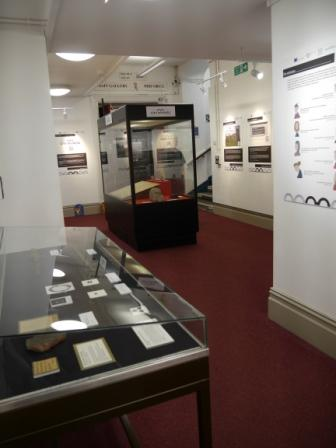
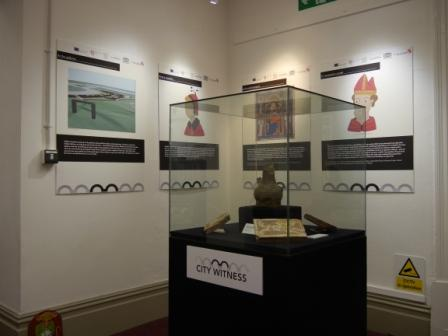

Events
For up-to-date news about project progress, activities and events, please see the Blog.
City Witness Exhibition

An exhibition linked to the City Witness project runs at Swansea Museum from 21 June - 7 September, 2014.
Events and activities linked to the exhibition have included:
Friday 20 June, 2014
7.30-9pm: Launch event, including overview of the research, introduction to the digital resources and Q&A with the project team, and Private View of the exhibition with refreshments (by invitation)
Saturday 21 June, 2014
10am-12pm: Mapping Medieval Swansea workshop
What can maps tell us about medieval Swansea? This interactive workshop introduced participants to sources and research techniques for reconstructing historic landscapes.
12.15-1.15pm: Medieval manuscript workshop
The strange tale of William Cragh, hanged in Swansea in 1290, survives in a manuscript in the Vatican Library. This workshop explored the hidden clues and evidence in this fascinating medieval source.
2.30-4.30pm: Medieval Swansea tour
Local people joined the research team to explore traces of medieval Swansea in the city today, and walk in the footsteps of William Cragh and other medieval characters.
|  |  |
Conference Presentations
The City Witness project research is disseminated via academic conferences and events, including:
- 'Beyond Engagement: Creating Integration, Innovation and Impact', University of Victoria, Canada, May 2014
- 'Urban Mapping: New Perspectives. A cross-disciplinary workshop on approaches to cartography in the arts and sciences', University of Nottingham, UK, June 2014
- Leeds International Medieval Congress, University of Leeds, UK, July 2014
- Digital Heritage 2014: Digital Communities in Action, University of York, UK, July 2014
- 'Urban History: Cities in Europe, Cities in the World', Lisbon, Portugal, September 2014